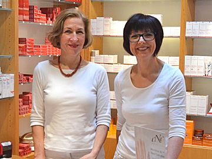

Unterstreichen Sie Ihre positive Ausstrahlung, genießen Sie einen besonderen Entspannungsmoment - und tun Sie sich selbst etwas Gutes: Mit einer hochwertigen Gesichts- und Körperpflege in unserem Beauty-Center bringen Sie neuen Schwung in Ihren Alltag. Speziell für „Ihn“ Besonders viel Stress im Job, immer aktiv, manchmal zu wenig Schlaf – und doch legen Sie großen Wert auf ein gepflegtes, vitales Äußeres? In unserem Studio erhält auch anspruchsvolle Männerhaut die Energie zurück, die ihr Tag für Tag genommen wird.
Neu in unserem Beauty-Center: die Pflegebehandlungen von Clarins. Mit den hochwertigen Produkten, in Kombination mit unserer Erfahrung und unserem Können, erleben Sie eine ganz besondere Schönheitsbehandlung. Und ein wissenschaftlicher Nachweis garantiert zugleich höchste Wirksamkeit.
Entdecken Sie Entspannung, lassen Sie den Alltag einfach hinter sich - und gönnen Sie sich etwas Zeit für Ihr individuelles Wohlbefinden! Wir laden Sie herzlich ein: Erleben Sie die besondere Atmosphäre in den hellen, liebevoll gestalteten Räumlichkeiten unseres Beauty-Centers. Hier bieten wir Ihnen alles rund um Ihr persönliches Wohlgefühl. Auf Wunsch können Sie gerne eine exklusive Behandlung "vom Gesicht bis zu den Füßen" durch 2 Kosmetikerinnen, in einem Termin genießen. Dank unserer über 40-jährigen Erfahrung und einer fundierten Ausbildung in einem renomierten Kosmetikstudio erhalten Sie bei uns auch eine individuelle Beratung und viele Pflegetipps.
Neu in unserem Beauty-Center: die Pflegebehandlungen von Clarins. Mit den hochwertigen Produkten, in Kombination mit unserer Erfahrung und unserem Können, erleben Sie eine ganz besondere Schönheitsbehandlung. Und ein wissenschaftlicher Nachweis garantiert zugleich höchste Wirksamkeit.